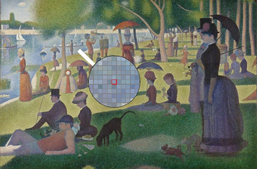
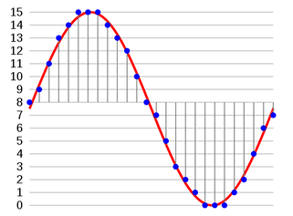
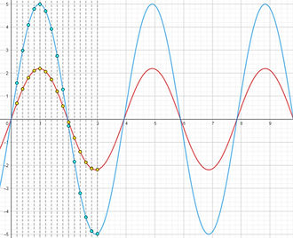

As said before, computers do not represent and process information using numbers,
text, images or sounds as we do. Instead, they represent everything using just two symbols: 1 and 0 .
For example, pairs of binary digits are added according to the rules:
0 + 0 = 0
0 + 1 = 1
1 + 1 = 10,
(one - zero, not ten) which means 0 with carry 1 .
The sequence 10 as a binary number , that is using only 2 symbols, is the equivalent of 2 as a decimal number.
Binary digits can represent text, images, video, audio, instructions
But how can different types of information such as text, images, sounds or even computer instructions be represented, using just the two symbols 1 and 0?
Starting from the numbers, and soon the alphabet, different coding conventions have been designed.
Here are some examples of binary representations of different media:
Text
can be represented in a computer by a sequence of binary codes, with each code representing a letter or a punctuation mark.
Older computing machinery used the so called ASCII code, which allocates seven bits for each symbol in latin-based alphabets. Because nowadays computers work with 8-bit groups of 1s and 0s (bytes),
rather than with 7-bit groups, ASCII codes are often extended by one bit to 8 bits.
A more flexible solution is Unicode, which makes use of 16 or even 32 bits, permitting a huge number of different characters (including, for example, Chinese or Japanese) to be coded.
| Binary |
Char |
Binary |
Char |
| 0100 0001 |
A |
0110 0001 |
a |
| 0100 0010 |
B |
0110 0010 |
b |
| 0100 0011 |
C |
0110 0011 |
c |
| 0100 0100 |
D |
0110 0100 |
d |

Using the RGB color model,
the color of this pixel is represented as
"37, 154, 170" in decimal,
or 10011010, 10011010,
10101010 in binary.
Images and videos
In 1886, impressionist painters developed a technique called Pointillism
in which small, distinct dots of color were applied in patterns to form
an image. Just by switching from dots to little tiny squares (
pixels),
we can easily understand how an image can be digitally represented.
In color imaging systems, the color of a pixel is typically represented by
three or four numbers coding component intensities such as red, green, and blue,
or cyan, magenta, yellow, and black.
A series of still images (hence set of numbers) visualized at sufficiently short time intervals,
is perceived by our visual system as moving images.
Audio
Sound, such as speech or music, is an analogue physical quantity, corresponding for example to
variations in air pressure. But also this type of information can be converted to a digital form.
To obtain a digital representation of a sound, samples of its intensity are taken at a sufficient speed (sampling rate),
and the value of each
sample is quantised to the nearest binary code.
It is important to appreciate that sounds such as speech or music varies rapidly with time, and so its samples will have to be taken at sufficiently
closely spaced intervals, if the digital representation is to be faithful to the original.

| Binary Code |
Description |
| 00000000 |00001000 |
Add content of memory cell number 8 into the Accumulator |
| 00000101 |00000100 |
Store the value of the Accumulator into Memory Location X |
| 00001100 |00000111 |
Unconditional jump to the instruction at location P |
A few of code ASCII
Instruction
In order to execute programs or process data, computers must follow some specific instructions.
As discussed in the
"CPU instruction set" section, there are many basic operations that a machine can perform. Each one is composed
of an
opcode (the instruction executed by the CPU) and one or more
operands (the data or memory locations the instruction operates on).
Since binary code is the only language that a computer can understand, these instruction are represented, again, as binary digits.
Multimedia information can be processed with "elementary" digital calculations
Since any multimedia information looks just like binary numbers to the computer,
it should be clear by now that whichever processing of these data involves digital calculations.
Here are some examples:
The volume of a sound represents the intensity of air pressure variations. Hence, increasing
the volume of a song involves a simple multiplication of the value of each sound sample by a
factor greater than 1.
The contrast of an image can be explained as the difference between maximum and minimum pixels colour intensity.
Hence, to change the contrast of an image it is sufficient to modify the value of these intensities,
increasing the difference between maximum and minimum values, following a simple formula.
The simplest way to increase the size of an image is replacing every pixel with a number of pixels of the same color. The resulting image is
larger than the original and preserves all the original detail.
To compress a video it is possible, for example, to reduce the level of detail of the composing frames. This can be achieved, for example,
by computing the average color of a group of pixels of different colors, and by replacing them with a single repeated pixel having that averaged color.
